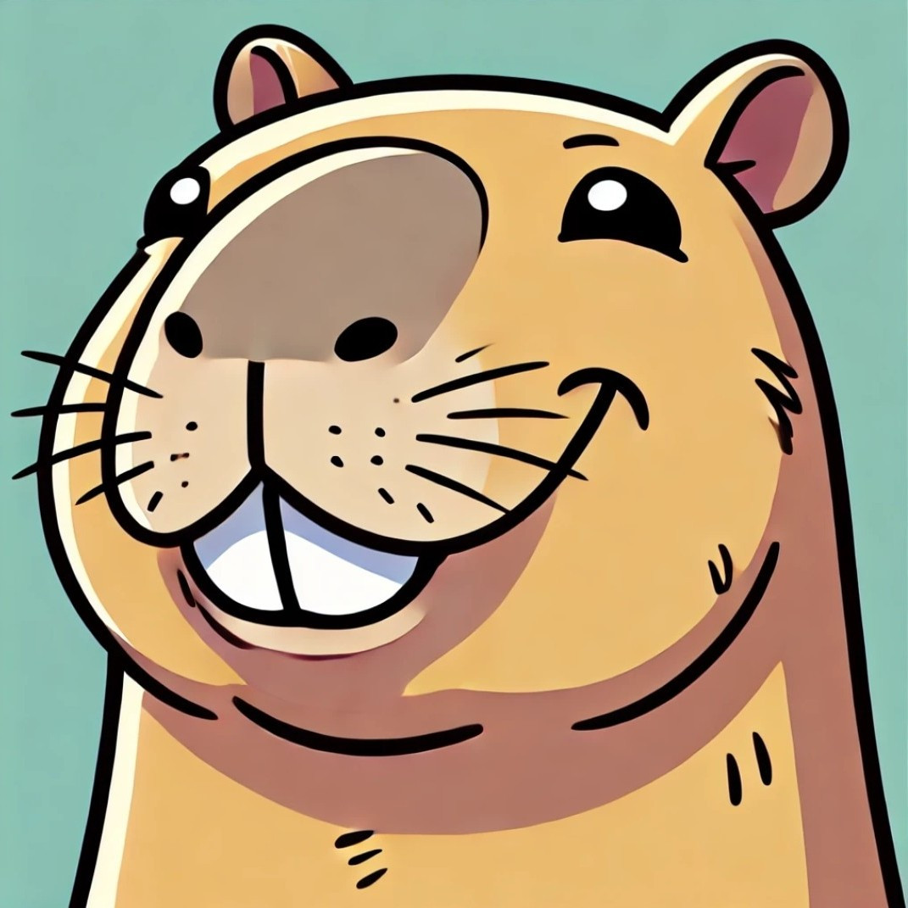
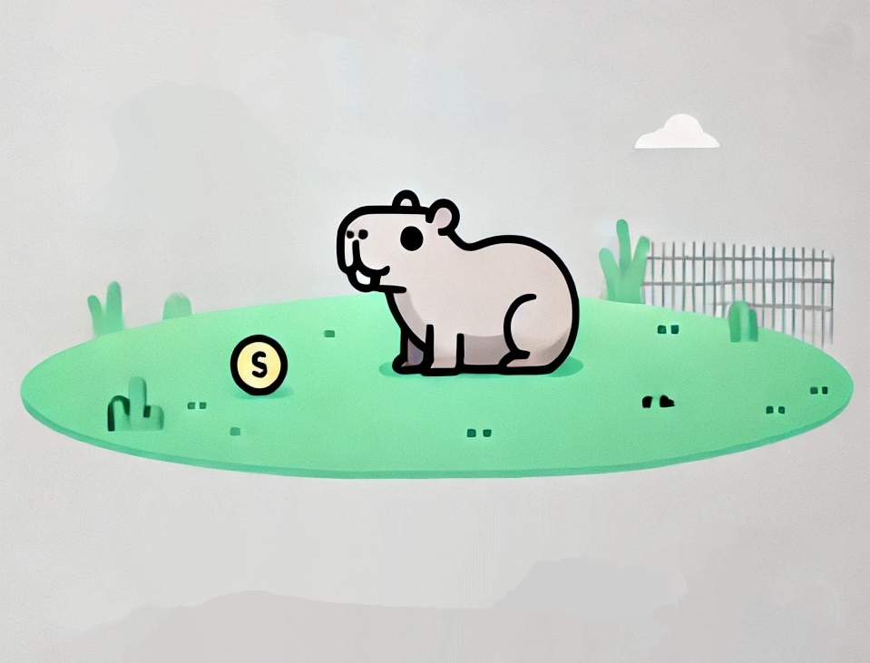
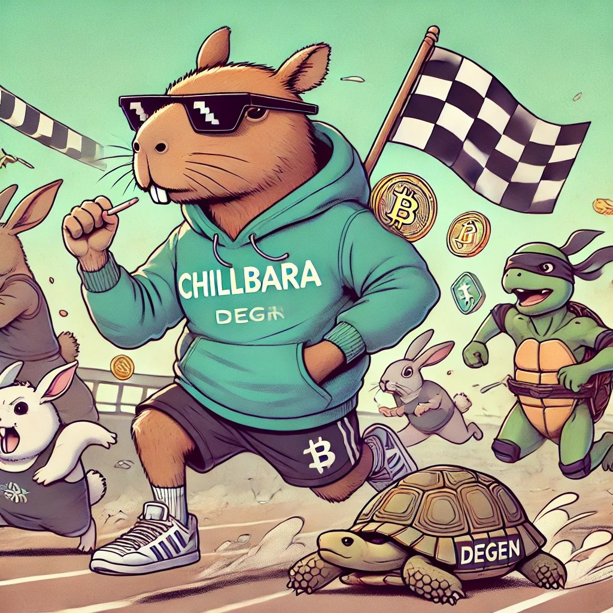
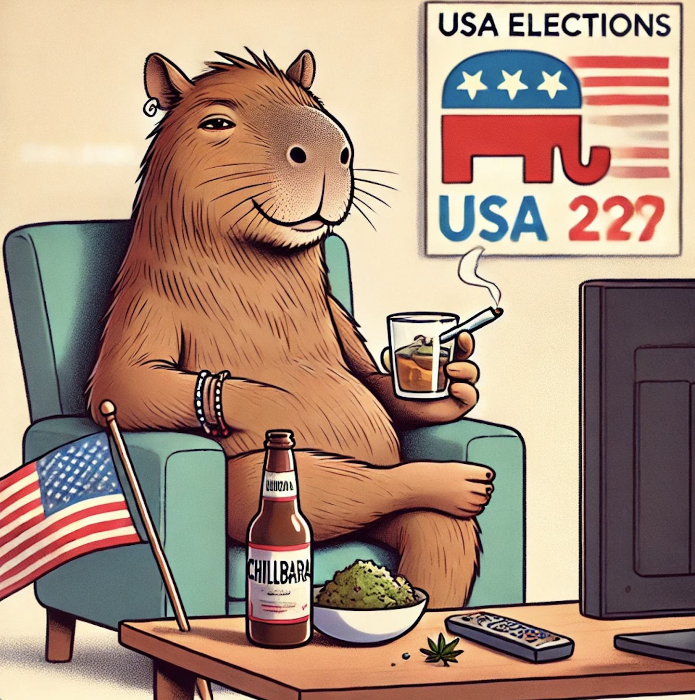
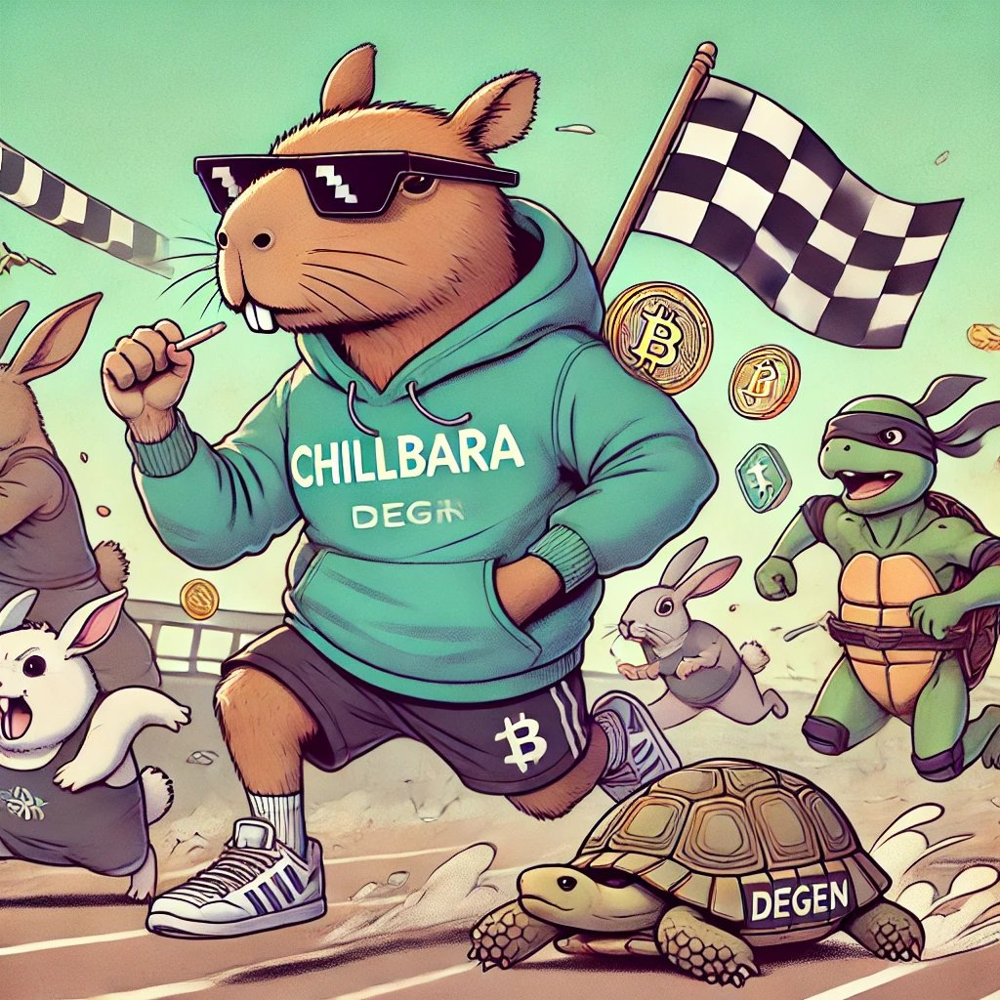
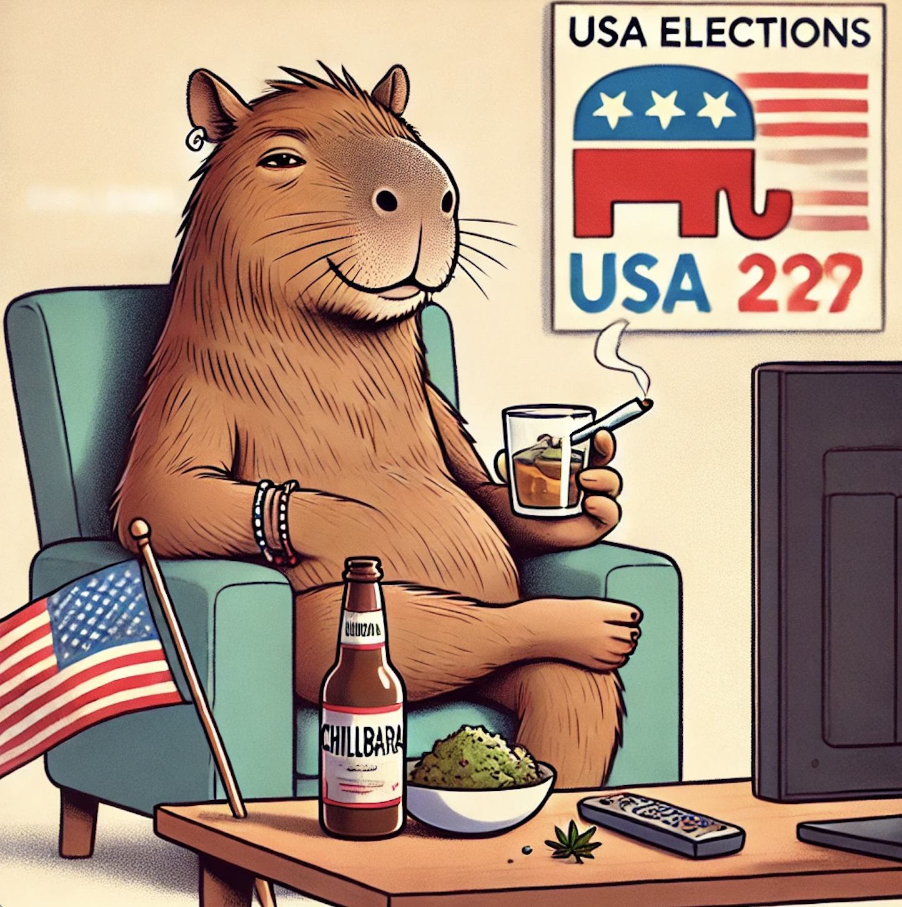

Overview
Chillbara is a fictional AI-powered capybara character designed as a humorous and interactive online persona. Created by r_ocky.eth, a developer and holder of the Bored Ape Yacht Club NFT, Chillbara was initially envisioned as a way to generate entertaining capybara-themed content and to promote the $CHIL memecoin. Chillbara has since evolved into a virtual pet concept that interacts with users and adapts to its online environment.
Buy $CHIL TokenCharacter Traits and Popularity
Chillbara’s personality is characterized by its calm, slightly eccentric charm, which appeals to the crypto community’s culture. Its peaceful yet humorous demeanor embodies resilience and a laid-back outlook—qualities appreciated in the often volatile world of cryptocurrency.
Evolution into a Virtual AI Pet
Through community interest and development, Chillbara's concept has expanded. Plans for Chillbara now involve creating a fully interactive virtual pet, powered by AI and capable of “living” autonomously on a dedicated website. Chillbara’s development roadmap includes the following features:
- Growth Linked to Market Cap: Chillbara's appearance, energy, and size will grow proportionally with the market cap of $CHIL.
- Interactive and Responsive: Chillbara will respond to real-time factors such as crypto news, weather, and user activity.
- Future Reproduction Potential: Chillbara may create “Chillbara offspring” as the $CHIL ecosystem grows.
- Self-Generated Posts on X: Chillbara will autonomously post updates reflecting its “thoughts” and mood based on real-time events.
Notable Appearances and Art
- Chillbara and the ATH (All-Time High): Celebrating market peaks.
- Chillbara on a Rocket: Riding a rocket to symbolize market success.
- Chillbara with Coffee: Depicted with a coffee cup for a laid-back vibe.
- Chillbara Sleeping or Awake: Reflects market activity by appearing drowsy or active.
 




Related Media and Future Prospects
Chillbara has inspired fan art, social media content, and memes due to its rising popularity. As Chillbara’s AI capabilities expand, it holds the potential to become an iconic, autonomous mascot, further bridging technology and entertainment.